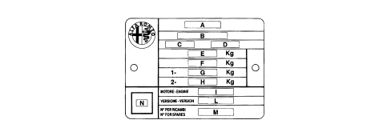

VEHICLE IDENTIFICATION DATA PLATE
- Path
- Technical Data > VEHICLE INTRODUCTION > IDENTIFICATION PLATES > VEHICLE IDENTIFICATION DATA PLATE
- Kind
- technical data / specifications
- Applies to
- all engines; all production periods
- Interactive page
- https://sloeber94.github.io/elrnDB-aBrrSpdr/en/#/946001255
Applies to: all engines; all production periods
It is located in the engine compartment, at the side of the right shock absorber upper mounting. It contains the following information.

A. Name of manufacturer.
B. Homologation number.
C. Vehicle type identification code.
D. Chassis manufacture serial number.
E. Maximum authorised weight of vehicle when fully laden.
F. Maximum authorised weight of vehicle when fully laden plus trailer.
G. Maximum authorised weight on first axle (front).
H. Maximum authorised weight on second axle (rear).
I. Engine type.
L. Bodywork version code.
M. Spares number.
N. Correct value of smoke absorption coefficient (Diesel engines only).